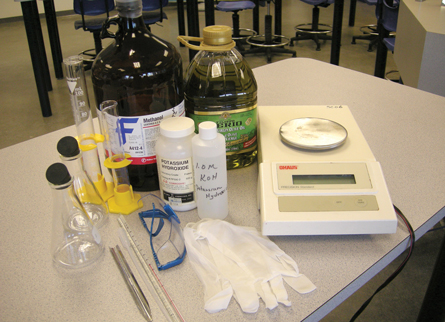

Module 2—Talking Energy
Lesson 3—Catalysts
 Get
Focused
Get
Focused

As you researched the performance of biodiesel in the previous lesson, did you come across personal accounts from people who have been making and using biodiesel in their own automobiles? You probably came across information that identifies the importance of using a strong base—a hydroxide—when preparing biodiesel. Why is sodium hydroxide, or alternatively potassium hydroxide, essential to making biodiesel? As you will learn in this lesson, these compounds act as catalysts in the chemical reaction that produces biodiesel. Catalysts are the focus of this lesson.
Consider the following questions as you complete Lesson 3:
- What is a catalyst?
- How does a catalyst influence a chemical reaction?
 Module
2: Lesson 3 Assignment
Module
2: Lesson 3 Assignment
In the Lesson 3 assignment you will design a laboratory
investigation to compare catalysts used in the preparation of
biodiesel. Download a copy of the Module 2: Lesson 3 Assignment to your computer
now.